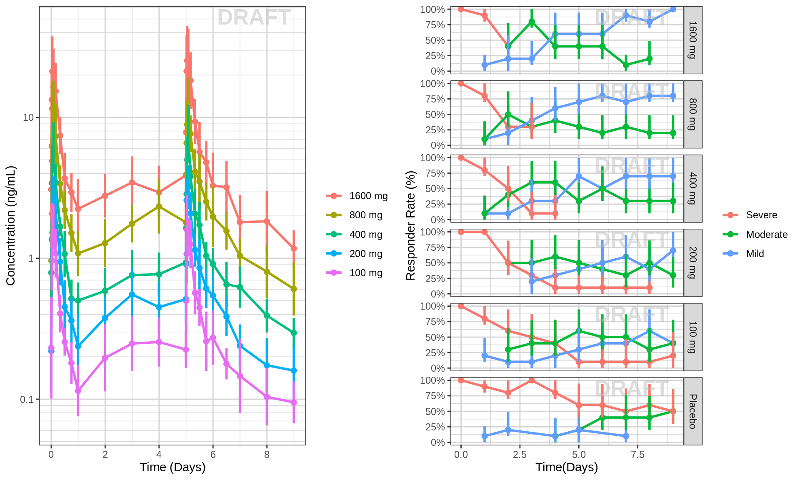
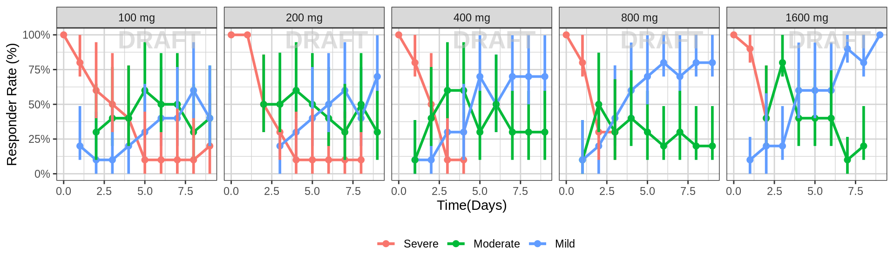
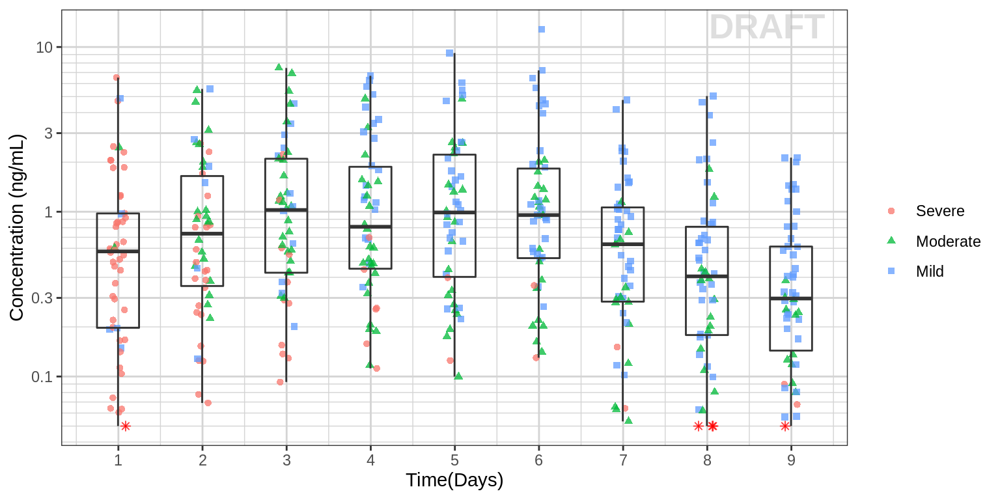
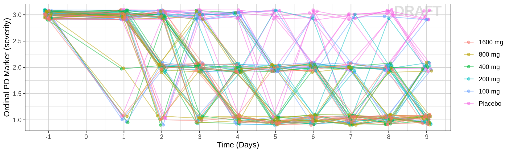
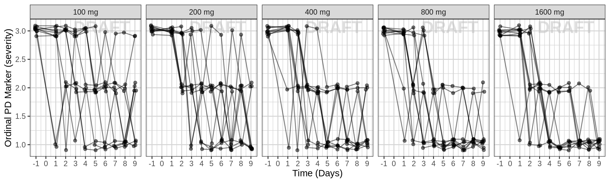
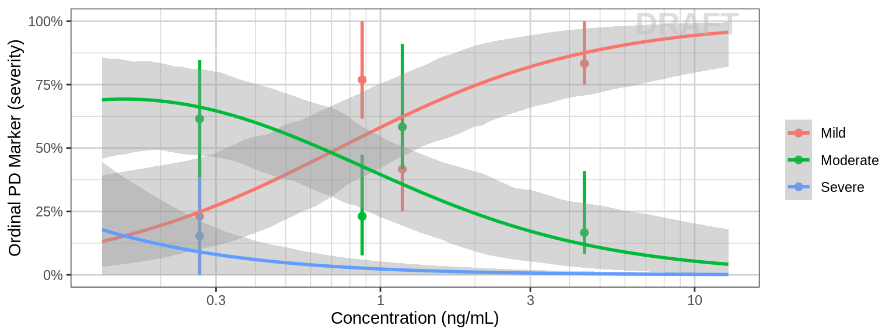

PK/PD, Exposure-Response - Ordinal Response
Alison Margolskee, Fariba Khanshan
Overview
This document contains exploratory plots for ordinal response data as well as the R code that generates these graphs. The plots presented here are based on simulated data (see: PKPD Datasets). Data specifications can be accessed on Datasets and Rmarkdown template to generate this page can be found on Rmarkdown-Template. You may also download the Multiple Ascending Dose PK/PD dataset for your reference (download dataset).
Ordinal data can be thought of as categorical data that has a natural order. For example, mild, moderate or severe. Another example could be Grade 1, Grade 2, Grade 3. Ordinal data can also come out of stratifying continuous data, for example binning a continuous variable into quartiles, or defining (arbitrary or meaningful) cutoffs for a continuous variable. Since ordinal data has a natural order, it is important to preserve that order when creating plots.
Setup
library(ggplot2)
library(dplyr)
library(tidyr)
library(gridExtra)
library(xgxr)
#flag for labeling figures as draft
status = "DRAFT"
## ggplot settings
xgx_theme_set()
#directories for saving individual graphs
dirs = list(
parent_dir = tempdir(),
rscript_dir = "./",
rscript_name = "Example.R",
results_dir = "./",
filename_prefix = "",
filename = "Example.png")Load Dataset
pkpd_data <- read.csv("../Data/Multiple_Ascending_Dose_Dataset2.csv")
DOSE_CMT = 1
PK_CMT = 2
PD_CMT = 5
SS_PROFDAY = 6 # steady state prof day
PD_PROFDAYS <- c(0, 2, 4, 6)
TAU = 24 # time between doses, units should match units of TIME, e.g. 24 for QD, 12 for BID, 7*24 for Q1W (when units of TIME are h)
#ensure dataset has all the necessary columns
pkpd_data = pkpd_data %>%
mutate(ID = ID, #ID column
TIME = TIME, #TIME column name
NOMTIME = NOMTIME,#NOMINAL TIME column name
PROFDAY = 1 + floor(NOMTIME / 24), #PROFILE DAY day associated with profile, e.g. day of dose administration
LIDV = LIDV, #DEPENDENT VARIABLE column name
CENS = CENS, #CENSORING column name
CMT = CMT, #COMPARTMENT column
DOSE = DOSE, #DOSE column here (numeric value)
TRTACT = TRTACT, #DOSE REGIMEN column here (character, with units),
LIDV_NORM = LIDV/DOSE,
LIDV_UNIT = EVENTU,
DAY_label = ifelse(PROFDAY > 0, paste("Day", PROFDAY), "Baseline"),
ORDINAL_LEVELS = factor(case_when(
CMT != PD_CMT ~ as.character(NA),
LIDV == 1 ~ "Mild",
LIDV == 2 ~ "Moderate",
LIDV == 3 ~ "Severe"
), levels = c("Mild", "Moderate", "Severe"))
)
#create a factor for the treatment variable for plotting
pkpd_data = pkpd_data %>%
arrange(DOSE) %>%
mutate(TRTACT_low2high = factor(TRTACT, levels = unique(TRTACT)),
TRTACT_high2low = factor(TRTACT, levels = rev(unique(TRTACT))),
ORDINAL_LEVELS_low2high = ORDINAL_LEVELS,
ORDINAL_LEVELS_high2low = factor(ORDINAL_LEVELS, levels = rev(levels(ORDINAL_LEVELS))))
#create pk and pd datasets
pk_data <- pkpd_data %>%
filter(CMT == PK_CMT)
pd_data <- pkpd_data %>%
filter(CMT == PD_CMT) %>%
mutate(
LIDV_jitter = jitter(LIDV, amount = 0.1),
TIME_jitter = jitter(TIME, amount = 0.1*24)
)
#create wide pkpd dataset for plotting PK vs PD
pkpd_data_wide <- pd_data %>%
select(ID, NOMTIME, PD = LIDV, ORDINAL_LEVELS, ORDINAL_LEVELS_low2high, ORDINAL_LEVELS_high2low) %>%
right_join(pk_data %>% select(-ORDINAL_LEVELS, -ORDINAL_LEVELS_low2high, -ORDINAL_LEVELS_high2low), by = c("ID", "NOMTIME")) %>%
rename(CONC = LIDV)%>%
filter(!is.na(PD))%>%
filter(!is.na(CONC))
#units and labels
time_units_dataset = "hours"
time_units_plot = "days"
trtact_label = "Dose"
time_label = "Time(Days)"
dose_units = unique((pkpd_data %>% filter(CMT == DOSE_CMT))$LIDV_UNIT) %>% as.character()
dose_label = paste0("Dose (", dose_units, ")")
conc_units = unique(pk_data$LIDV_UNIT) %>% as.character()
conc_label = paste0("Concentration (", conc_units, ")")
AUC_units = paste0("h.", conc_units)
concnorm_label = paste0("Normalized Concentration (", conc_units, ")/", dose_units)
pd_units = unique(pd_data$LIDV_UNIT) %>% as.character()
pd_response_label = "Responder Rate (%)"
pd_ordinal_label = paste0("Ordinal PD Marker (", pd_units, ")")Provide an overview of the data
Summarize the data in a way that is easy to visualize the general trend of PD over time and between doses. Using summary statistics can be helpful, e.g. Mean +/- SE, or median, 5th & 95th percentiles. Consider either coloring by dose or faceting by dose. Depending on the amount of data one graph may be better than the other.
PK and PD marker over time, colored by Dose, median, 5th, 95th percentiles by nominal time
Does the effect appear to increase and decrease quickly on a short time scale, or does is occur over a longer time scale? Do the PK and PD profiles appear to be on the same time scale, or does the PD seem delayed compared to the PK? Is there clear separation between the profiles for different doses? Does the effect appear to increase with increasing dose? Do you detect a saturation of the effect?
#PK data
gg1 <- ggplot(data = pk_data,
aes(x = NOMTIME,y = LIDV, color = TRTACT_high2low, fill = TRTACT_high2low))
gg1 <- gg1 + xgx_stat_ci(conf_level = .95)
gg1 <- gg1 + xgx_annotate_status(status)
gg1 <- gg1 + xgx_scale_x_time_units(units_dataset = time_units_dataset,
units_plot = time_units_plot)
gg1 <- gg1 + guides(color = guide_legend(""),fill = guide_legend(""))
gg1 <- gg1 + xgx_scale_y_log10()
gg1 <- gg1 + labs(y = conc_label)
#PD data
gg2 <- ggplot(data = pd_data, aes(x = PROFDAY, response = ORDINAL_LEVELS_high2low, color = ORDINAL_LEVELS_high2low))
gg2 <- gg2 + xgx_stat_ci(distribution = "ordinal", geom = list("line", "point","errorbar")) + scale_y_continuous(labels = scales::percent)
gg2 <- gg2 + labs(x = time_label, y = pd_response_label)
gg2 <- gg2 + facet_grid(TRTACT_high2low~.)
gg2 <- gg2 + scale_fill_brewer(palette = 6)
gg2 <- gg2 + guides(color = guide_legend(""),fill = guide_legend(""))
gg2 <- gg2 + xgx_annotate_status(status)
#put PK and PD plots side-by-side:
grid.arrange(gg1, gg2, ncol = 2)
PK and PD marker over time, faceted by Dose, mean +/- 95% CI by nominal time
#PK data
gg <- ggplot(data = pk_data,
aes(x = NOMTIME,y = LIDV))
gg <- gg + xgx_stat_ci(conf_level = .95)
gg <- gg + xgx_scale_x_time_units(units_dataset = time_units_dataset,
units_plot = time_units_plot)
gg <- gg + guides(color = guide_legend(""),fill = guide_legend(""))
gg <- gg + facet_grid(~TRTACT_low2high)
gg <- gg + xgx_scale_y_log10()
gg <- gg + labs(y = conc_label)
gg
#PD data
gg <- ggplot(data = pd_data %>% subset(DOSE>0,),
aes(x = PROFDAY, response = ORDINAL_LEVELS_high2low, color = ORDINAL_LEVELS_high2low))
gg <- gg + xgx_stat_ci(distribution = "ordinal", geom = list("line", "point","errorbar"))
gg <- gg + facet_grid(~TRTACT_low2high)
gg <- gg + xgx_annotate_status(status)
gg <- gg + scale_y_continuous(labels = scales::percent)
gg <- gg + guides(color = guide_legend("")) + theme(legend.position = "bottom")
gg <- gg + labs(x = time_label, y = pd_response_label)
gg
gg <- ggplot(data = pkpd_data_wide, aes(y = CONC,x = NOMTIME/24))
gg <- gg + geom_jitter(data = pkpd_data_wide %>% subset(CENS == 0,),
aes(color = ORDINAL_LEVELS_high2low, shape = ORDINAL_LEVELS_high2low), width = 0.1, height = 0.0, alpha = 0.75)
gg <- gg + geom_jitter(data = pkpd_data_wide %>% subset(CENS == 1,),
aes(color = ORDINAL_LEVELS_high2low, shape = ORDINAL_LEVELS_high2low), color = "red", shape = 8, width = 0.1, height = 0.0, alpha = 0.75)
gg <- gg + geom_boxplot(aes(group = factor(NOMTIME/24)),width = 0.5, fill = NA, outlier.shape = NA)
gg <- gg + guides(color = guide_legend(""),fill = guide_legend(""), shape = guide_legend(""))
gg <- gg + xlab(time_label) + scale_x_continuous(breaks = seq(0,9))
gg <- gg + xgx_annotate_status(status)
gg <- gg + xgx_scale_y_log10()
gg <- gg + ylab(conc_label)
gg
Explore variability
PK and PD marker over time, colored by Dose, dots & lines grouped by individuals
#PK data
gg <- ggplot(data = pk_data,
aes(x = TIME, y = LIDV,group = ID, color = factor(TRTACT_high2low)))
gg <- gg + xgx_annotate_status(status)
gg <- gg + geom_line(alpha = 0.5)
gg <- gg + geom_point(alpha = 0.5)
gg <- gg + guides(color = guide_legend(""),fill = guide_legend(""))
gg <- gg + xgx_scale_x_time_units(units_dataset = time_units_dataset,
units_plot = time_units_plot, breaks = seq(-24,9*24,24))
gg <- gg + geom_point(data = pk_data[pk_data$CENS == 1,], color = "red", shape = 8,alpha = 0.5)
gg <- gg + xgx_scale_y_log10()
gg <- gg + labs(y = conc_label)
gg
#PD data
gg <- ggplot(data = pd_data,
aes(x = TIME_jitter, y = LIDV_jitter, group = ID, color = factor(TRTACT_high2low)))
gg <- gg + xgx_annotate_status(status)
gg <- gg + geom_line(alpha = 0.5)
gg <- gg + geom_point(alpha = 0.5)
gg <- gg + guides(color = guide_legend(""),fill = guide_legend(""))
gg <- gg + xgx_scale_x_time_units(units_dataset = time_units_dataset,
units_plot = time_units_plot, breaks = seq(-24,9*24,24))
gg <- gg + labs(y = pd_ordinal_label)
gg
PK and PD marker over time, faceted by Dose, dots & lines grouped by individuals
#PK data
gg <- ggplot(data = pk_data, aes(x = TIME,y = LIDV,group = ID))
gg <- gg + xgx_annotate_status(status)
gg <- gg + geom_line(alpha = 0.5)
gg <- gg + geom_point(alpha = 0.5)
gg <- gg + guides(color = guide_legend(""),fill = guide_legend(""))
gg <- gg + xgx_scale_x_time_units(units_dataset = time_units_dataset,
units_plot = time_units_plot)
gg <- gg + facet_grid(~TRTACT_low2high)
gg <- gg + geom_point(data = pk_data %>% subset(CENS == 1,), color = "red", shape = 8, alpha = 0.5)
gg <- gg + xgx_scale_y_log10()
gg <- gg + labs(y = conc_label)
gg
#PD data
gg <- ggplot(data = pd_data %>% subset(DOSE>0,),
aes(x = TIME_jitter, y = LIDV_jitter, group = ID))
gg <- gg + xgx_annotate_status(status)
gg <- gg + facet_grid(~TRTACT_low2high)
gg <- gg + geom_line(alpha = 0.5)
gg <- gg + geom_point(alpha = 0.5)
gg <- gg + guides(color = guide_legend(""),fill = guide_legend(""))
gg <- gg + xgx_scale_x_time_units(units_dataset = time_units_dataset,
units_plot = time_units_plot, breaks = seq(-24,9*24,24))
gg <- gg + labs(y = pd_ordinal_label)
gg
Explore Exposure-Response Relationship
data_to_plot <- pkpd_data_wide %>% subset(PROFDAY == SS_PROFDAY,)
gg <- ggplot(data = data_to_plot, aes(y = CONC,x = ORDINAL_LEVELS_low2high))
gg <- gg + geom_jitter(data = data_to_plot %>% subset(CENS == 0,),
aes(color = TRTACT_high2low), shape = 19, width = 0.1, height = 0.0, alpha = 0.5)
gg <- gg + geom_jitter(data = data_to_plot %>% subset(CENS == 1,),
color = "red", shape = 8, width = 0.1, height = 0.0, alpha = 0.5)
gg <- gg + geom_boxplot(width = 0.5, fill = NA, outlier.shape = NA)
gg <- gg + xgx_scale_y_log10()
gg <- gg + guides(color = guide_legend(""),fill = guide_legend(""))
gg <- gg + labs(x = pd_ordinal_label, y = conc_label)
gg <- gg + coord_flip()
gg <- gg + xgx_annotate_status(status)
gggg <- ggplot(data = data_to_plot, aes(x = CONC, response = ORDINAL_LEVELS_low2high, color = ORDINAL_LEVELS_low2high))
gg <- gg + xgx_stat_ci(bins = 4, distribution = "ordinal", geom = list("point","errorbar"))
gg <- gg + xgx_stat_smooth(method = "polr")
gg <- gg + xgx_scale_x_log10()
gg <- gg + scale_y_continuous(labels = scales::percent)
gg <- gg + guides(color = guide_legend(""),fill = guide_legend(""))
gg <- gg + labs(y = pd_ordinal_label, x = conc_label)
gg <- gg + xgx_annotate_status(status)
gg
Explore covariate effects on Exposure-Response Relationship
Stratify exposure-response plots by covariates of interest to explore whether any key covariates impact response independent of exposure. For examples of plots and code startifying by covariate, see Continuous PKPD Covariate Section
Individual response vs exposure hysteresis plots
Using geom_path you can create hysteresis plots of response vs exposure. Including details like arrows or colors can be helpful to indicate the direction of time.
If most of the arrows point up and to the right or down and to the left, this indicates a positive relationship between exposure and response (i.e. increasing exposure -> increasing response). Arrows pointing down and to the right or up and to the left indicate a negative relationship.
In a hysteresis plot, you want to determine whether the path is curving, and if so in what direction. If you detect a curve in the hysteresis plot, this indicates there is a delay between the exposure and the response. Normally, a clockwise turn indicates that increasing exposure is associated with (a delayed) increasing response, while a counter clockwise turn indicates increasing concentration gives (a delayed) decreasing response.
In the plots below, most of the hysteresis paths follow a counter clockwise turn, with most arrows pointing up and to the right or down and to the left, indicating the effect increases in a delayed manner with increasing concentration.
pkpd_data_wide<- pkpd_data_wide %>% arrange(ID, TIME)
gg <- ggplot(data = pkpd_data_wide, aes(x = CONC,y = ORDINAL_LEVELS_low2high,group = ID, color = TIME))
gg <- gg + xgx_annotate_status(status)
gg <- gg + geom_path(arrow = arrow(length = unit(0.15,"cm")))
gg <- gg + labs(x = conc_label , y = pd_ordinal_label)
gg <- gg + xgx_scale_x_log10()
gg <- gg + theme(panel.grid.minor.x = ggplot2::element_line(color = rgb(0.9,0.9,0.9)),
panel.grid.minor.y = ggplot2::element_line(color = rgb(0.9,0.9,0.9)))
gg + facet_wrap(~ID+TRTACT_low2high, ncol = 5)
R Session Info
sessionInfo()## R version 4.1.0 (2021-05-18)
## Platform: x86_64-pc-linux-gnu (64-bit)
## Running under: Red Hat Enterprise Linux Server 7.9 (Maipo)
##
## Matrix products: default
## BLAS/LAPACK: /CHBS/apps/EB/software/imkl/2019.1.144-gompi-2019a/compilers_and_libraries_2019.1.144/linux/mkl/lib/intel64_lin/libmkl_gf_lp64.so
##
## locale:
## [1] LC_CTYPE=en_US.UTF-8 LC_NUMERIC=C LC_TIME=en_US.UTF-8 LC_COLLATE=en_US.UTF-8 LC_MONETARY=en_US.UTF-8
## [6] LC_MESSAGES=en_US.UTF-8 LC_PAPER=en_US.UTF-8 LC_NAME=C LC_ADDRESS=C LC_TELEPHONE=C
## [11] LC_MEASUREMENT=en_US.UTF-8 LC_IDENTIFICATION=C
##
## attached base packages:
## [1] stats graphics grDevices utils datasets methods base
##
## other attached packages:
## [1] nlme_3.1-160 emmeans_1.6.3 brms_2.18.0 Rcpp_1.0.9 DoseFinding_1.0-1 mvtnorm_1.1-3 lattice_0.20-45 RxODE_1.1.1
## [9] survminer_0.4.9 ggpubr_0.4.0 survival_3.4-0 knitr_1.40 broom_1.0.1 caTools_1.18.2 DT_0.26 forcats_0.5.2
## [17] stringr_1.4.1 purrr_0.3.5 readr_2.1.3 tibble_3.1.8 tidyverse_1.3.2 xgxr_1.1.1 zoo_1.8-11 gridExtra_2.3
## [25] tidyr_1.2.1 dplyr_1.0.10 ggplot2_3.3.6
##
## loaded via a namespace (and not attached):
## [1] utf8_1.2.2 lme4_1.1-30 tidyselect_1.2.0 htmlwidgets_1.5.4 grid_4.1.0 munsell_0.5.0 codetools_0.2-18
## [8] interp_1.1-2 miniUI_0.1.1.1 withr_2.5.0 Brobdingnag_1.2-9 colorspace_2.0-3 highr_0.9 rstudioapi_0.14
## [15] stats4_4.1.0 DescTools_0.99.42 ggsignif_0.6.2 bayesplot_1.9.0 labeling_0.4.2 rstan_2.21.7 KMsurv_0.1-5
## [22] farver_2.1.1 bridgesampling_1.1-2 TH.data_1.1-1 coda_0.19-4 vctrs_0.5.0 generics_0.1.3 xfun_0.34
## [29] R6_2.5.1 markdown_1.2 gamm4_0.2-6 projpred_2.0.2 rex_1.2.1 bitops_1.0-7 cachem_1.0.6
## [36] reshape_0.8.8 PreciseSums_0.5 assertthat_0.2.1 promises_1.2.0.1 lotri_0.4.2 scales_1.2.1 multcomp_1.4-20
## [43] nnet_7.3-17 googlesheets4_1.0.1 rootSolve_1.8.2.2 gtable_0.3.1 processx_3.7.0 lmom_2.8 sandwich_3.0-2
## [50] rlang_1.0.6 splines_4.1.0 rstatix_0.7.0 lazyeval_0.2.2 gargle_1.2.1 inline_0.3.19 checkmate_2.1.0
## [57] reshape2_1.4.4 yaml_2.3.6 abind_1.4-5 modelr_0.1.9 threejs_0.3.3 crosstalk_1.2.0 backports_1.4.1
## [64] rsconnect_0.8.28 httpuv_1.6.6 Hmisc_4.7-0 tensorA_0.36.2 tools_4.1.0 ellipsis_0.3.2 jquerylib_0.1.4
## [71] posterior_1.3.1 RColorBrewer_1.1-3 proxy_0.4-26 ggridges_0.5.4 plyr_1.8.7 base64enc_0.1-3 progress_1.2.2
## [78] RCurl_1.98-1.4 ps_1.7.1 prettyunits_1.1.1 rpart_4.1.16 deldir_1.0-6 haven_2.5.1 cluster_2.1.3
## [85] fs_1.5.2 magrittr_2.0.3 data.table_1.14.2 openxlsx_4.2.4 colourpicker_1.1.1 reprex_2.0.2 googledrive_2.0.0
## [92] matrixStats_0.62.0 stringfish_0.15.7 shinyjs_2.1.0 hms_1.1.2 qs_0.25.3 mime_0.12 evaluate_0.17
## [99] xtable_1.8-4 shinystan_2.6.0 rio_0.5.27 jpeg_0.1-9 readxl_1.4.1 rstantools_2.2.0 compiler_4.1.0
## [106] crayon_1.5.2 minqa_1.2.4 StanHeaders_2.21.0-7 htmltools_0.5.3 mgcv_1.8-41 later_1.3.0 tzdb_0.3.0
## [113] Formula_1.2-4 expm_0.999-6 Exact_2.1 RcppParallel_5.1.5 lubridate_1.8.0 DBI_1.1.3 RApiSerialize_0.1.0
## [120] dbplyr_2.2.1 MASS_7.3-58.1 boot_1.3-28 sys_3.4 Matrix_1.5-1 car_3.0-11 cli_3.4.1
## [127] igraph_1.3.5 parallel_4.1.0 pkgconfig_2.0.3 km.ci_0.5-2 foreign_0.8-82 binom_1.1-1 xml2_1.3.3
## [134] dygraphs_1.1.1.6 bslib_0.4.0 estimability_1.3 minpack.lm_1.2-1 rvest_1.0.3 callr_3.7.2 distributional_0.3.1
## [141] digest_0.6.30 rmarkdown_2.17 cellranger_1.1.0 survMisc_0.5.5 htmlTable_2.2.1 Deriv_4.1.3 gld_2.6.2
## [148] dparser_1.3.1-5 curl_4.3.3 gtools_3.9.3 shiny_1.7.2 nloptr_2.0.3 lifecycle_1.0.3 jsonlite_1.8.3
## [155] carData_3.0-4 fansi_1.0.3 pillar_1.8.1 loo_2.5.1 GGally_2.1.2 pkgbuild_1.3.1 fastmap_1.1.0
## [162] httr_1.4.4 xts_0.12.2 glue_1.6.2 zip_2.2.0 shinythemes_1.2.0 png_0.1-7 pander_0.6.4
## [169] class_7.3-19 stringi_1.7.8 sass_0.4.2 latticeExtra_0.6-30 memoise_2.0.1 e1071_1.7-8